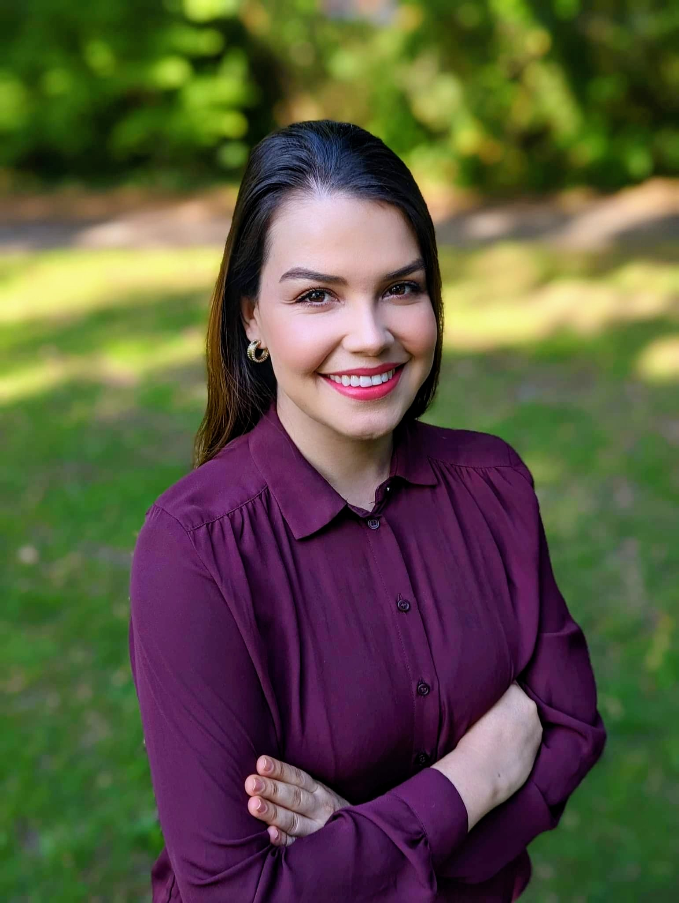
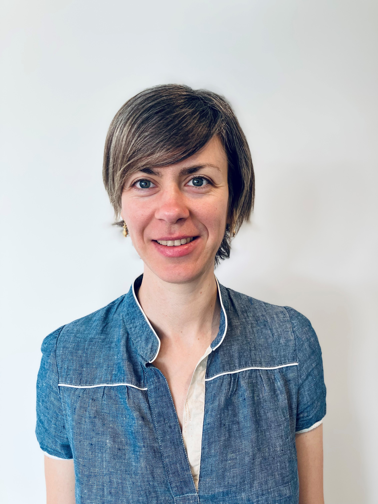
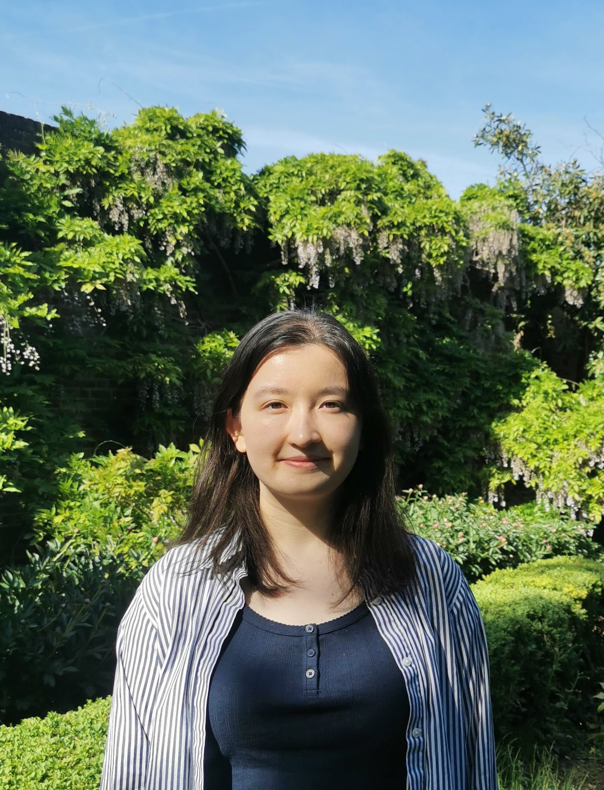

Current Members
The Team


Dr Carolina Cruz-Cardona
Research Associate
Lithium-ion battery fire propagation.
Dr Hosein Sadeghi
Visiting Research Associate
Multiphysics simulation of lithium-ion battery fires.

Ally Mamgain
PhD Student
Impact of lithium-ion battery fire in a confined subterranean environment.
Abdullah Rehman
PhD Student
Ignition and fire spread processes in the Wildland Urban Interface.

Elena Funk
PhD Student
Development of a methodology for the definition of battery fire scenarios.
Marissa Dauner
PhD Student
Physics-based modelling of wildfire spread.

Natalie Yeap
PhD Student
Quantification of fire safety for new battery materials.
Jiancheng Lin
PhD Student
Sensitivity of fire spread models in wildfires.